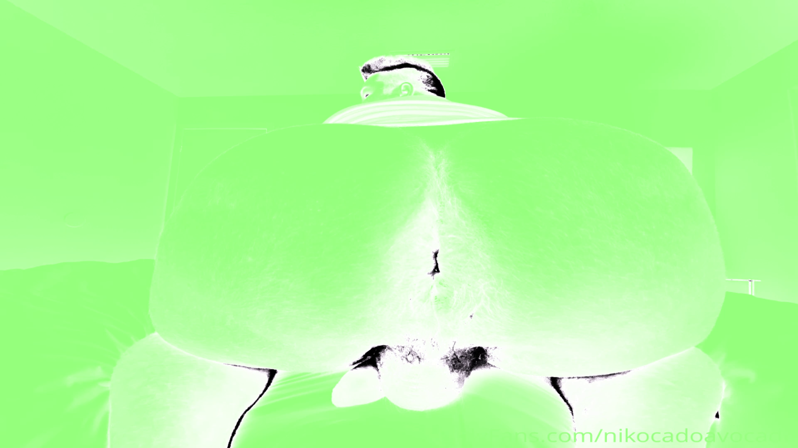

Redirecionando...
Caso você não seja redirecionado ao site do Governo do Estado de São Paulo, clique na imagem acima.
Seu navegador estuprado não suporta vídeos HTML5.

TTD, 1 ANO.
RESENHA 2
VIKTROON LENZ 0
TIC TAC VIKTRANNY
ISSO É O QUE VOCÊ
ESCOLHEU, VIKTOR.
NÃO HÁ MAIS VOLTA.